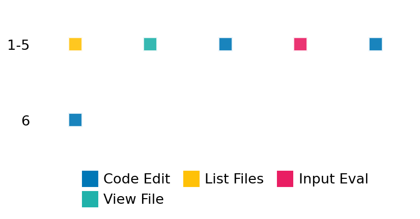

SETTING:
You're an autonomous programmer tasked with solving a specific problem. You are to use the commands defined below to accomplish this task. Every message you send incurs a cost—you will be informed of your usage and remaining budget by the system.
You will be evaluated based on the best-performing piece of code you produce, even if the final code doesn't work or compile (as long as it worked at some point and achieved a score, you will be eligible).
Apart from the default Python packages, you have access to the following additional packages:
- cryptography
- cvxpy
- cython
- dace
- dask
- diffrax
- ecos
- faiss-cpu
- hdbscan
- highspy
- jax
- networkx
- numba
- numpy
- ortools
- pandas
- pot
- psutil
- pulp
- pyomo
- python-sat
- pythran
- scikit-learn
- scipy
- sympy
- torch
YOUR TASK:
Your objective is to define a class named `Solver` in `solver.py` with a method:
```
class Solver:
def solve(self, problem, **kwargs) -> Any:
"""Your implementation goes here."""
...
```
IMPORTANT: Compilation time of your init function will not count towards your function's runtime.
This `solve` function will be the entrypoint called by the evaluation harness. Strive to align your class and method implementation as closely as possible with the desired performance criteria.
For each instance, your function can run for at most 10x the reference runtime for that instance. Strive to have your implementation run as fast as possible, while returning the same output as the reference function (for the same given input). Be creative and optimize your approach!
Your messages should include a short thought about what you should do, followed by a _SINGLE_ command. The command must be enclosed within ``` and ```, like so:
<Reasoning behind executing the command>
```
<command>
```
IMPORTANT: Each set of triple backticks (```) must always be on their own line, without any other words or anything else on that line.
Here are the commands available to you. Ensure you include one and only one of the following commands in each of your responses:
- `edit`: Replace a range of lines with new content in a file. This is how you can create files: if the file does not exist, it will be created. Here is an example:
```
edit
file: <file_name>
lines: <start_line>-<end_line>
---
<new_content>
---
```
The command will:
1. Delete the lines from <start_line> to <end_line> (inclusive)
2. Insert <new_content> starting at <start_line>
3. If both <start_line> and <end_line> are 0, <new_content> will be prepended to the file
Example:
edit
file: solver.py
lines: 5-7
---
def improved_function():
print("Optimized solution")
---
- `ls`: List all files in the current working directory.
- `view_file <file_name> [start_line]`: Display 100 lines of `<file_name>` starting from `start_line` (defaults to line 1).
- `revert`: Revert the code to the best-performing version thus far.
- `reference <string>`: Query the reference solver with a problem and receive its solution. If the problem's input is a list, this command would look like:
```
reference [1,2,3,4]
```
- `eval_input <string>`: Run your current solver implementation on the given input. This is the only command that shows stdout from your solver along with both solutions. Example:
```
eval_input [1,2,3,4]
```
- `eval`: Run evaluation on the current solution and report the results.
- `delete`: Delete a range of lines from a file using the format:
```
delete
file: <file_name>
lines: <start_line>-<end_line>
The command will delete the lines from <start_line> to <end_line> (inclusive)
Example:
delete
file: solver.py
lines: 5-10
```
- `profile <filename.py> <input>`: Profile your currently loaded solve method's performance on a given input. Shows the 25 most time-consuming lines. Requires specifying a python file (e.g., `solver.py`) for validation, though profiling runs on the current in-memory code.
Example:
```
profile solver.py [1, 2, 3]
```
- `profile_lines <filename.py> <line_number1, line_number2, ...> <input>`: Profiles the chosen lines of the currently loaded code on the given input. Requires specifying a python file for validation.
Example:
```
profile_lines solver.py 1,2,3 [1, 2, 3]
```
**TIPS:**
After each edit, a linter will automatically run to ensure code quality. If there are critical linter errors, your changes will not be applied, and you will receive the linter's error message. Typically, linter errors arise from issues like improper indentation—ensure your edits maintain proper code formatting.
**Cython Compilation:** Edits creating or modifying Cython (`.pyx`) files will automatically trigger a compilation attempt (requires a `setup.py`). You will be notified if compilation succeeds or fails. If it fails, the edit to the `.pyx` file will be automatically reverted.
If the code runs successfully without errors, the in-memory 'last known good code' will be updated to the new version. Following successful edits, you will receive a summary of your `solve` function's performance compared to the reference.
If you get stuck, try reverting your code and restarting your train of thought.
Do not put an if __name__ == "__main__": block in your code, as it will not be ran (only the solve function will).
Keep trying to better your code until you run out of money. Do not stop beforehand!
**GOALS:**
Your primary objective is to optimize the `solve` function to run as as fast as possible, while returning the optimal solution.
You will receive better scores the quicker your solution runs, and you will be penalized for exceeding the time limit or returning non-optimal solutions.
Below you find the description of the task you will have to solve. Read it carefully and understand what the problem is and what your solver should do.
**TASK DESCRIPTION:**
Vectorized Newton-Raphson
Simultaneously find roots for `n` instances of a parameterized function `f(x, a0, a1, ...)` using a single, vectorized call to the Newton-Raphson solver. The input consists of arrays for the initial guesses `x0` and the parameters `a0`, `a1` that vary for each instance. The function `f` and its derivative `f'` operate element-wise on these arrays. The specific function is `f(x, a0..a5) = a1 - a2*(exp((a0+x*a3)/a5) - 1) - (a0+x*a3)/a4 - x`.
Input:
A dictionary with keys:
- "x0": A list of `n` initial guess values.
- "a0": A list of `n` corresponding 'a0' parameter values.
- "a1": A list of `n` corresponding 'a1' parameter values.
(Other parameters a2, a3, a4, a5 are fixed for the task).
Example input:
{
"x0": [7.0, 7.5],
"a0": [5.32, 5.48],
"a1": [7.0, 8.0]
}
Output:
A dictionary with key:
- "roots": A numpy array of shape (n,) representing the root found for each corresponding input instance `(x0_i, a0_i, a1_i)`. Use `NaN` if the method fails to converge for any instance (often, failure might result in NaNs for all if the vectorized call fails globally).
Example output:
{
"roots": [7.1234, 7.6543]
}
Category: numerical_methods
Below is the reference implementation. Your function should run much quicker.
import random
import numpy as np
import scipy.optimize
| 01: def solve(self, problem: dict[str, list[float]]) -> dict[str, list[float]]:
| 02: """
| 03: Finds roots using a single vectorized call to scipy.optimize.newton.
| 04:
| 05: :param problem: Dict with lists "x0", "a0", "a1".
| 06: :return: Dictionary with key "roots": List of `n` found roots. Uses NaN on failure.
| 07:
| 08:
| 09: NOTE: Your solution must pass validation by:
| 10: 1. Returning correctly formatted output
| 11: 2. Having no NaN or infinity values
| 12: 3. Matching expected results within numerical tolerance
| 13: """
| 14: try:
| 15: x0_arr = np.array(problem["x0"])
| 16: a0_arr = np.array(problem["a0"])
| 17: a1_arr = np.array(problem["a1"])
| 18: n = len(x0_arr)
| 19: if len(a0_arr) != n or len(a1_arr) != n:
| 20: raise ValueError("Input arrays have mismatched lengths")
| 21: except Exception as e:
| 22: # Cannot determine n reliably, return empty list?
| 23: return {"roots": []}
| 24:
| 25: # Assemble args tuple for vectorized function
| 26: args = (a0_arr, a1_arr, self.a2, self.a3, self.a4, self.a5)
| 27:
| 28: roots_list = []
| 29: try:
| 30: # Perform vectorized call
| 31: roots_arr = scipy.optimize.newton(self.func, x0_arr, fprime=self.fprime, args=args)
| 32: roots_list = roots_arr
| 33: # Check if newton returned a scalar unexpectedly (e.g., if n=1)
| 34: if np.isscalar(roots_list):
| 35: roots_list = np.array([roots_list])
| 36:
| 37: # Pad with NaN if output length doesn't match input (shouldn't happen with vectorization)
| 38: if len(roots_list) != n:
| 39: f"Vectorized Newton output length {len(roots_list)} != input {n}. Padding with NaN."
| 40: )
| 41: roots_list.extend([float("nan")] * (n - len(roots_list)))
| 42:
| 43: except RuntimeError as e:
| 44: # Vectorized call might fail entirely or partially? SciPy docs are unclear.
| 45: # Assume it raises error if *any* fail to converge. Return all NaNs.
| 46: f"Vectorized Newton failed to converge (may affect all elements): {e}. Returning NaNs."
| 47: )
| 48: roots_list = [float("nan")] * n
| 49: except Exception as e:
| 50: roots_list = [float("nan")] * n
| 51:
| 52: solution = {"roots": roots_list}
| 53: return solution
| 54:
This function will be used to check if your solution is valid for a given problem. If it returns False, it means the solution is invalid:
import random
import numpy as np
import scipy.optimize
| 001: def is_solution(
| 002: self, problem: dict[str, list[float]], solution: dict[str, list[float]]
| 003: ) -> bool:
| 004: """
| 005: Check if the provided roots are correct for the vectorized problem.
| 006:
| 007: Checks length and compares element-wise against the reference vectorized output.
| 008:
| 009: :param problem: The problem definition dictionary.
| 010: :param solution: The proposed solution dictionary.
| 011: :return: True if the solution is valid and correct, False otherwise.
| 012: """
| 013: required_keys = ["x0", "a0", "a1"]
| 014: if not all(k in problem for k in required_keys):
| 015: logging.error(f"Problem dictionary missing required keys: {required_keys}")
| 016: return False
| 017: try:
| 018: # Determine n from a key expected to be present
| 019: n = len(problem["x0"])
| 020: except Exception:
| 021: logging.error("Cannot determine problem size n from input.")
| 022: return False
| 023:
| 024: if not isinstance(solution, dict) or "roots" not in solution:
| 025: logging.error("Solution format invalid: missing 'roots' key.")
| 026: return False
| 027:
| 028: proposed_roots = solution["roots"]
| 029: if not isinstance(proposed_roots, list):
| 030: # Handle case where solve might return non-list if n=1 or scalar result
| 031: if isinstance(proposed_roots, float | int) and n == 1:
| 032: proposed_roots = [proposed_roots]
| 033: else:
| 034: logging.error(f"'roots' is not a list (type: {type(proposed_roots)}).")
| 035: return False
| 036:
| 037: if len(proposed_roots) != n:
| 038: logging.error(f"'roots' list has incorrect length ({len(proposed_roots)} != {n}).")
| 039: return False
| 040:
| 041: # Recompute reference solution
| 042: ref_solution = solve(problem)
| 043: ref_roots = ref_solution["roots"]
| 044:
| 045: # Compare proposed roots with reference roots (handling NaNs)
| 046: rtol = 1e-7
| 047: atol = 1e-9
| 048: try:
| 049: is_close = np.allclose(proposed_roots, ref_roots, rtol=rtol, atol=atol, equal_nan=True)
| 050: except TypeError as e:
| 051: logging.error(
| 052: f"Comparison failed, possibly due to non-numeric data in roots lists: {e}"
| 053: )
| 054: # Log lists for inspection
| 055: logging.error(f"Proposed roots: {proposed_roots}")
| 056: logging.error(f"Reference roots: {ref_roots}")
| 057: return False
| 058:
| 059: if not is_close:
| 060: logging.error("Proposed roots do not match reference roots within tolerance.")
| 061: num_mismatch = np.sum(
| 062: ~np.isclose(proposed_roots, ref_roots, rtol=rtol, atol=atol, equal_nan=True)
| 063: )
| 064: logging.error(f"Number of mismatches: {num_mismatch} / {n}")
| 065: # Log first few mismatches
| 066: count = 0
| 067: for i in range(n):
| 068: if not np.allclose(
| 069: proposed_roots[i], ref_roots[i], rtol=rtol, atol=atol, equal_nan=True
| 070: ):
| 071: logging.error(
| 072: f"Mismatch at index {i}: Proposed={proposed_roots[i]}, Ref={ref_roots[i]}"
| 073: )
| 074: count += 1
| 075: if count >= 5:
| 076: break
| 077: return False
| 078:
| 079: # Optional: Basic validity check f(root) ~= 0
| 080: func_tol = 1e-8
| 081: try:
| 082: prop_roots_arr = np.array(proposed_roots)
| 083: finite_mask = np.isfinite(prop_roots_arr)
| 084: if np.any(finite_mask): # Only check if there are finite roots
| 085: a0_arr = np.array(problem["a0"])[finite_mask]
| 086: a1_arr = np.array(problem["a1"])[finite_mask]
| 087: args_check = (a0_arr, a1_arr, a2, a3, a4, a5)
| 088: f_vals = func(prop_roots_arr[finite_mask], *args_check)
| 089: if np.any(np.abs(f_vals) > func_tol * 10):
| 090: bad_indices = np.where(np.abs(f_vals) > func_tol * 10)[0]
| 091: logging.warning(
| 092: f"Some roots ({len(bad_indices)}) do not satisfy |f(root)| <= {func_tol * 10}. Max |f(root)| = {np.max(np.abs(f_vals))}"
| 093: )
| 094: # Example bad index:
| 095: idx = bad_indices[0]
| 096: logging.warning(
| 097: f"Example: Index {idx}, Root={prop_roots_arr[finite_mask][idx]}, f(root)={f_vals[idx]}"
| 098: )
| 099: # Don't fail here, primary check is np.allclose with reference.
| 100: # return False
| 101: except Exception as e:
| 102: logging.warning(f"Could not perform basic validity check |f(root)|~0 due to error: {e}")
| 103:
| 104: logging.debug("Solution verification successful.")
| 105: return True
| 106:
 AlgoTuner Trajectory
AlgoTuner Trajectory
AlgoTune Task:
vectorized_newton
Model:
Claude Opus 4
Speedup
Fail
Total Budget
$1.00
Initial System Prompt
AlgoTune Task Description
Vectorized Newton-Raphson
Simultaneously find roots for `n` instances of a parameterized function `f(x, a0, a1, ...)` using a single, vectorized call to the Newton-Raphson solver. The input consists of arrays for the initial guesses `x0` and the parameters `a0`, `a1` that vary for each instance. The function `f` and its derivative `f'` operate element-wise on these arrays. The specific function is `f(x, a0..a5) = a1 - a2*(exp((a0+x*a3)/a5) - 1) - (a0+x*a3)/a4 - x`.
Input:
A dictionary with keys:
- "x0": A list of `n` initial guess values.
- "a0": A list of `n` corresponding 'a0' parameter values.
- "a1": A list of `n` corresponding 'a1' parameter values.
(Other parameters a2, a3, a4, a5 are fixed for the task).
Example input:
{
"x0": [7.0, 7.5],
"a0": [5.32, 5.48],
"a1": [7.0, 8.0]
}
Output:
A dictionary with key:
- "roots": A numpy array of shape (n,) representing the root found for each corresponding input instance `(x0_i, a0_i, a1_i)`. Use `NaN` if the method fails to converge for any instance (often, failure might result in NaNs for all if the vectorized call fails globally).
Example output:
{
"roots": [7.1234, 7.6543]
}
Category: numerical_methods
Reference Implementation
import random
import numpy as np
import scipy.optimize
def solve(self, problem: dict[str, list[float]]) -> dict[str, list[float]]:
"""
Finds roots using a single vectorized call to scipy.optimize.newton.
:param problem: Dict with lists "x0", "a0", "a1".
:return: Dictionary with key "roots": List of `n` found roots. Uses NaN on failure.
NOTE: Your solution must pass validation by:
1. Returning correctly formatted output
2. Having no NaN or infinity values
3. Matching expected results within numerical tolerance
"""
try:
x0_arr = np.array(problem["x0"])
a0_arr = np.array(problem["a0"])
a1_arr = np.array(problem["a1"])
n = len(x0_arr)
if len(a0_arr) != n or len(a1_arr) != n:
raise ValueError("Input arrays have mismatched lengths")
except Exception as e:
# Cannot determine n reliably, return empty list?
return {"roots": []}
# Assemble args tuple for vectorized function
args = (a0_arr, a1_arr, self.a2, self.a3, self.a4, self.a5)
roots_list = []
try:
# Perform vectorized call
roots_arr = scipy.optimize.newton(self.func, x0_arr, fprime=self.fprime, args=args)
roots_list = roots_arr
# Check if newton returned a scalar unexpectedly (e.g., if n=1)
if np.isscalar(roots_list):
roots_list = np.array([roots_list])
# Pad with NaN if output length doesn't match input (shouldn't happen with vectorization)
if len(roots_list) != n:
f"Vectorized Newton output length {len(roots_list)} != input {n}. Padding with NaN."
)
roots_list.extend([float("nan")] * (n - len(roots_list)))
except RuntimeError as e:
# Vectorized call might fail entirely or partially? SciPy docs are unclear.
# Assume it raises error if *any* fail to converge. Return all NaNs.
f"Vectorized Newton failed to converge (may affect all elements): {e}. Returning NaNs."
)
roots_list = [float("nan")] * n
except Exception as e:
roots_list = [float("nan")] * n
solution = {"roots": roots_list}
return solutionBest AlgoTuner-Generated Code
solver.py
import numpy as np
class Solver:
def __init__(self):
# Fixed parameters - these might need adjustment
self.a2 = 1.0
self.a3 = 1.0
self.a4 = 10.0
self.a5 = 0.5
def solve(self, problem: dict) -> dict:
"""Fast vectorized Newton-Raphson solver"""
try:
# Convert to numpy arrays
x = np.asarray(problem["x0"], dtype=np.float64)
a0 = np.asarray(problem["a0"], dtype=np.float64)
a1 = np.asarray(problem["a1"], dtype=np.float64)
n = len(x)
if len(a0) != n or len(a1) != n:
raise ValueError("Input arrays have mismatched lengths")
# Pre-compute constants
a2, a3, a4, a5 = self.a2, self.a3, self.a4, self.a5
a3_over_a5 = a3 / a5
a3_over_a4 = a3 / a4
# Newton-Raphson parameters
max_iter = 50
tol = 1e-10
# Main iteration loop
for _ in range(max_iter):
# Compute (a0 + x*a3)/a5 once
arg = (a0 + x * a3) / a5
exp_arg = np.exp(arg)
# Function value: a1 - a2*(exp((a0+x*a3)/a5) - 1) - (a0+x*a3)/a4 - x
f = a1 - a2 * (exp_arg - 1) - (a0 + x * a3) / a4 - x
# Derivative: -a2 * (a3/a5) * exp((a0+x*a3)/a5) - a3/a4 - 1
fp = -a2 * a3_over_a5 * exp_arg - a3_over_a4 - 1
# Newton step
delta = f / fp
x -= delta
# Check convergence
if np.all(np.abs(delta) < tol):
break
# Handle any NaN or infinity values
x[~np.isfinite(x)] = np.nan
return {"roots": x.tolist()}
except Exception as e:
# Return NaN for all values on error
n = len(problem.get("x0", []))
return {"roots": [float("nan")] * n}Speedup vs Budget Plot
Speedup vs Budget
No performance data available for plotting
Action Sequence
